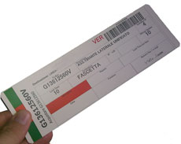

Kan (看) significa “visuale”, Ban (板) significa “segnale”. Il kanban si basa infatti su dei cartellini fisici che acconsentono la produzione, l’acquisto o la movimentazione dei materiali.
L’obiettivo del kanban è di evitare la sovrapproduzione che è lo spreco più impattante sulle performance di un sistema produttivo.
Il kanban è un metodo operativo per far circolare le informazioni in modo sistematizzato all’interno dell’azienda ed eventualmente tra azienda e fornitori eliminando la necessità di sistemi complessi di programmazione della produzione. Il kanban si configura come un cartellino quadrato che contiene le informazioni necessarie per produrre, acquistare o movimentare componenti e materiali nel sistema produttivo. Di conseguenza il kanban rappresenta il motore dell’attività dell’azienda gestendo in modo automatico la quotidianità degli ordini di lavoro, consentendo ai responsabili di occuparsi di risolvere le criticità e di sviluppare i miglioramenti del sistema.
I kanban si possono distinguere in due grandi tipologie:
- I kanban di movimentazione o di trasporto che servono per spostare componenti e materiali verso un processo produttivo
- I kanban di produzione che rappresentano veri e propri ordini di produzione mediante i quali si autorizza il processo a monte a produrre un certo componente per un processo a valle.
Le informazioni che generalmente si possono trovare su un cartellino kanban sono:
- Il codice del componente interessato
- Il fornitore di quel componente
- Il cliente che lo richiede
- Il tempo a disposizione per il ripristino
- La quantità da ripristinare
- Il contenitore da utilizzare
- Altre informazioni personalizzate
I cartellini kanban vengono posizionati su un contenitore che contiene una quantità prefissata di un componente. Solo dopo che questo materiale viene consumato il cartellino viene passato al fornitore che può ripristinare i componenti consumati. Il flusso dei materiali in una produzione a kanban è perciò definito “tirato” in quanto la produzione di un componente è autorizzata solo da un effettivo consumo.
I flussi produttivi tirati non necessitano di risorse dedicate alla programmazione della produzione e hanno il vantaggio di eliminare l’Effetto Forrester.
L’area dove vengono immagazzinati i contenitori con i cartellini kanban viene chiamata Supermarket.

Rappresentazione del ciclo kanban nel Value Stream Mapping (Mappatura del flusso del valore)
Alcuni dei benefici che l’utilizzo del Kanban è in grado di offrire alle aziende sono:
- Eliminazione della sovrapproduzione
- Aumento della flessibilità nella risposta alla domanda del cliente
- Semplificazione del sistema informativo legato alla produzione
- Maggior integrazione nella catena dei processi che vanno dai fornitori fino ai clienti